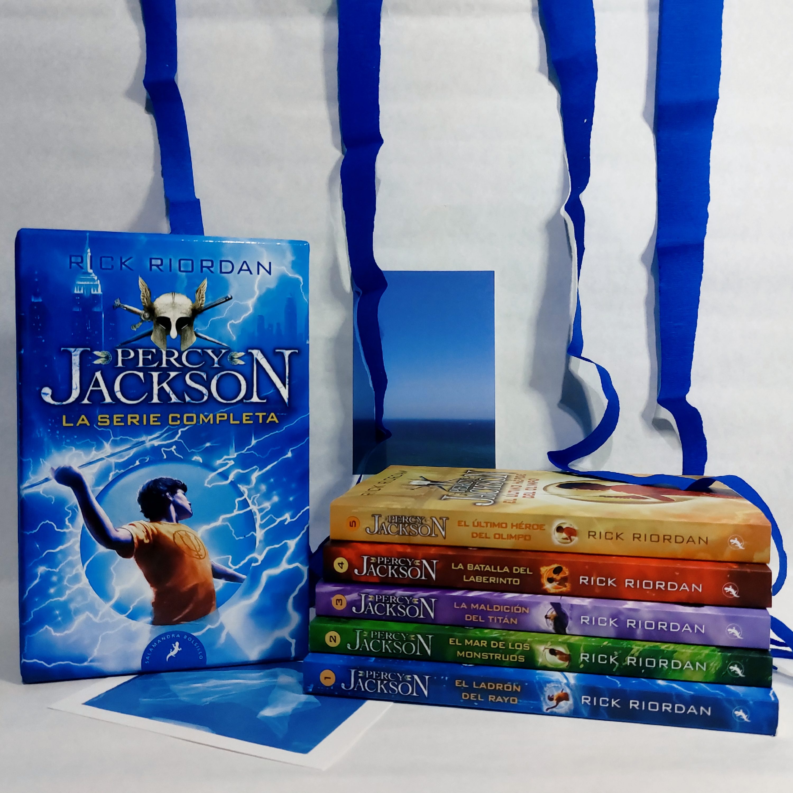

RECOMENDACIONES
Wotakoi
★★★★☆

"Narumi Momose es una trabajadora de oficina que oculta su estilo de vida de fujoshi otaku. Cuando en su nuevo lugar de trabajo, Narumi se encuentra con su viejo amigo de la infancia, Hirotaka, un hombre de la compañía guapo y capaz que es un otaku de juegos. Los dos parecen perfectos el uno para el otro, pero el amor es difícil para el otaku."
Empecé Wotakoi con algunas dudas, la verdad no es mi género de manga/anime preferido, pero queria algo entretenido y que me saque una sonrisa, y definitivamente puedo decir que lo logré.
El manga es un sin fin de guiños a la cultura otaku/gamer, con referencias a animes como evangelion, o juegos como pokemon que no solo se encuentran en las conversaciones si no que tambien ayudan a ambientar varias escenas (personalmente me encontré a mi misma muy emocionada al ir encontrando cada uno de esos easter eggs). [...]
Reseña completa en mi instagram
Trailer de Pracy Jackson
★★★★☆
"Expulsado de seis colegios, Percy Jackson padece dislexia y dificultades para concentrarse, o al menos ésa es la versión oficial. Objeto de burlas por inventarse historias fantásticas, ni siquiera él mismo acaba de creérselas hasta el día que los dioses del Olimpo le revelan la verdad: Percy es nada menos que un semidiós, es decir, el hijo de un dios y una mortal."
¡Habemus trailer!
Leí Percy Jackson en mi adolescencia, me crié prácticamente con Rick y sus maravillosas historias repletas de mitologia.
Aún recuerdo las dos peliculas y su intento (lamentablemente) fallido de adaptar la saga principal en la pantalla. Pero no todo es malo! Disney parece haber apostado una vez más por el hijo de Poseidón y sus aventuras, y nos va a traer para diciembre una serie adaptando lo que parece ser la primera entrega
¿Será este el intento ganador?
Mira el trailer oficial!
1989 (Taylor's Version)
★★★★★
"My name is taylor and i was born in 1989"
Originalmente lanzado en 2014, y en busca de recuperar los derechos de su música, Taylor Swift re-graba lo que sería su quinto "(Taylor's Version)" álbum: 1989.
Reviviendo clasicos de su momento como Style, Blank Space y Bad Blood, 1989 nos devuelve a la adolescencia en pleno 2014: repleta de Tumblr, One Direction y Bajo la misma estrella
A pesar de ser eso; una regrabación, se siente completamente nuevo, probablemente la madurez en su voz, la superación de esa época, entre otros lo hagan crear un sentimiento de caminar en la playa en pleno otoño
Heartsteel: Paranoia
★★★☆☆
"HEARTSTEEL es una banda. kayn, ezreal, sett, yone, k'sante y aphelios son sus integrantes. ''PARANOIA'' cuenta con la participación de BAEKHYUN, tobi lou, ØZI y Cal Scruby "
Quien diria que la empresa de música Riot Games hacía juegos ¿no?
No voy a mentir, los guiños a todo el videojuego que Riot incorpora en sus grupos musicales me parecen muy interesantes (por ejemplo, Heartsteel es un item mítico dentro del juego).
Como una vieja fan de Baekhyun, y una constante jugadora de LoL, la canción se me pego en segundos, es una boyband con todas las letras, y con un videoclip maravilloso (La verdad que todo el crédito del exito deberían llevarselo los animadores de Riot que siempre traen algo nuevo a la mesa)
No dudo que seguiremos escuchando de este grupo por mucho tiempo más...
MGS: Sons of Liberty
★★★★☆
"Es el año 2007, nos encontramos dos años después del incidente de Shadow Moses. Durante estos dos años la tecnología secreta de Metal Gear gracias a Revolver Ocelot ha circulado libremente por el mercado negro. Como consecuencia han aparecido incontables versiones pirata de Metal Gear por todo el mundo. En medio de todo esto está Solid Snake, actual miembro de la recién fundada Philanthropy, una especie de ONG anti-Metal Gear, junto con su compañero Otacon han viajado por el mundo para destruir estas réplicas para evitar una catástrofe nuclear."
Después de años esperando que Konami lance este juego para PC, al fin lo hizo!
Es un poco dificil ser 100% objetiva con este juego cuando es probablemente mi favorito. Pero la trama, la temprana introduccion de la Inteligencia Artificial en la sociedad y el evidente manejo de la información a conveniencia del mas poderoso siempre hace que esta obra sea una de las mejores de Kojima
Si no les molestan los gráficos del 2001, MGS: Sons of Liberty es una gran opción de fin de semana
Ao Kuma Cafe
★★★★★
"Cafetería & IVREA STORE"
Uno de mis pasatiempos favoritos es merendar: con amigas, familia, sola, merendar es un ritual hermoso
Y en mi busqueda de cafes en Bs As, me encontré con Ao Kuma Cafe. Un cafecito cerca de la estación de subte de palermo que combina mis doc cosas favoritas: el anime y la merienda
Tienen un menú extenso de comidas y bebidas referentes a mangas y animes conocidos que no solo son riquisimos, si no que tambien son esteticamente hermosos (por ejemplo tienen un melonpan inspirado en la fruta gomu-gomu de One Piece).
Además son un punto de venta de la editoria IVREA (un combo peligroso si me preguntan)
Seguilos en instagram
Wotakoi
★★★★☆
"Narumi Momose es una trabajadora de oficina que oculta su estilo de vida de fujoshi otaku. Cuando en su nuevo lugar de trabajo, Narumi se encuentra con su viejo amigo de la infancia, Hirotaka, un hombre de la compañía guapo y capaz que es un otaku de juegos. Los dos parecen perfectos el uno para el otro, pero el amor es difícil para el otaku."
Empecé Wotakoi con algunas dudas, la verdad no es mi género de manga/anime preferido, pero queria algo entretenido y que me saque una sonrisa, y definitivamente puedo decir que lo logré.
El manga es un sin fin de guiños a la cultura otaku/gamer, con referencias a animes como evangelion, o juegos como pokemon que no solo se encuentran en las conversaciones si no que tambien ayudan a ambientar varias escenas (personalmente me encontré a mi misma muy emocionada al ir encontrando cada uno de esos easter eggs). [...]
Reseña completa en mi instagram
Trailer de Pracy Jackson
★★★★☆
"Expulsado de seis colegios, Percy Jackson padece dislexia y dificultades para concentrarse, o al menos ésa es la versión oficial. Objeto de burlas por inventarse historias fantásticas, ni siquiera él mismo acaba de creérselas hasta el día que los dioses del Olimpo le revelan la verdad: Percy es nada menos que un semidiós, es decir, el hijo de un dios y una mortal."
¡Habemus trailer!
Leí Percy Jackson en mi adolescencia, me crié prácticamente con Rick y sus maravillosas historias repletas de mitologia.
Aún recuerdo las dos peliculas y su intento (lamentablemente) fallido de adaptar la saga principal en la pantalla. Pero no todo es malo! Disney parece haber apostado una vez más por el hijo de Poseidón y sus aventuras, y nos va a traer para diciembre una serie adaptando lo que parece ser la primera entrega
¿Será este el intento ganador?
Mira el trailer oficial!
1989 (Taylor's Version)
★★★★★
"My name is taylor and i was born in 1989"
Originalmente lanzado en 2014, y en busca de recuperar los derechos de su música, Taylor Swift re-graba lo que sería su quinto "(Taylor's Version)" álbum: 1989.
Reviviendo clasicos de su momento como Style, Blank Space y Bad Blood, 1989 nos devuelve a la adolescencia en pleno 2014: repleta de Tumblr, One Direction y Bajo la misma estrella
A pesar de ser eso; una regrabación, se siente completamente nuevo, probablemente la madurez en su voz, la superación de esa época, entre otros lo hagan crear un sentimiento de caminar en la playa en pleno otoño